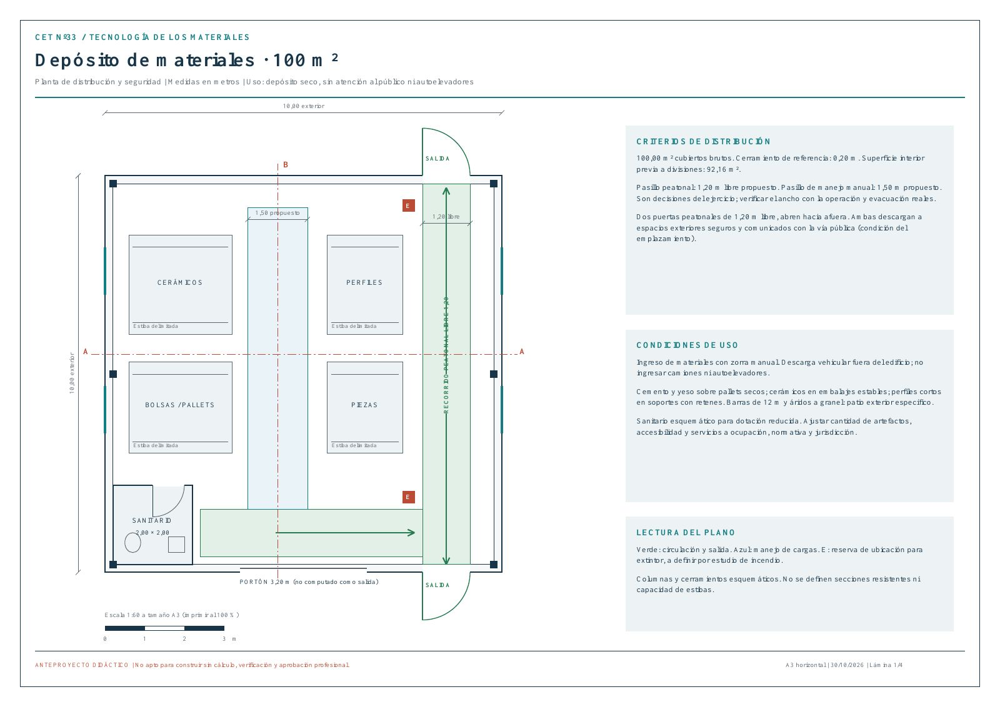
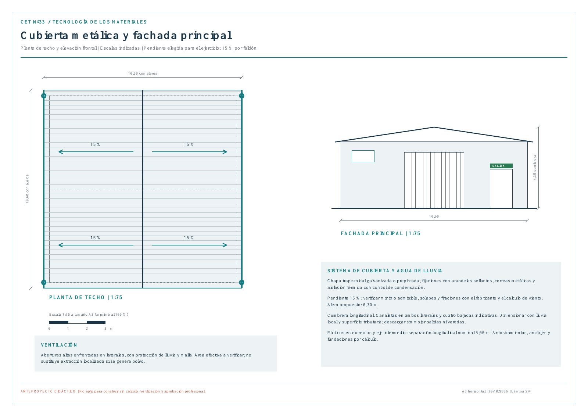
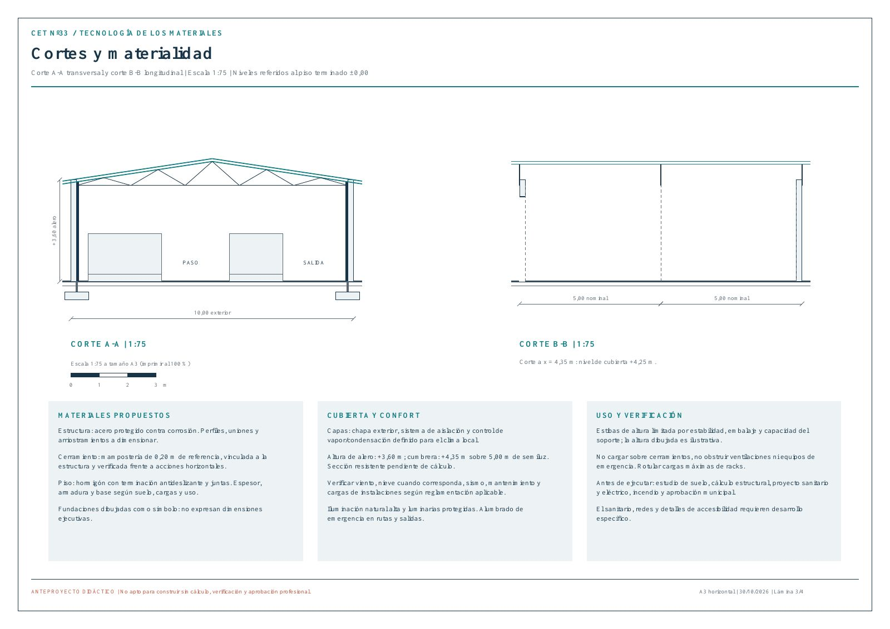
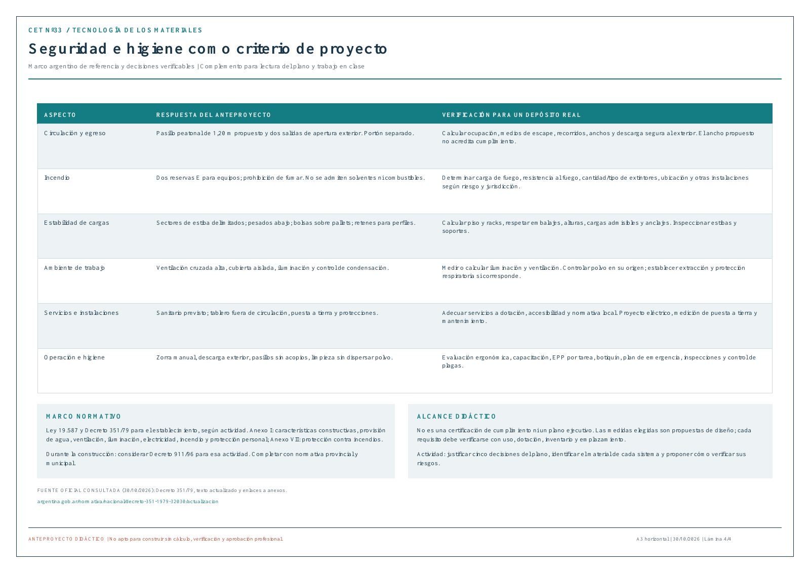
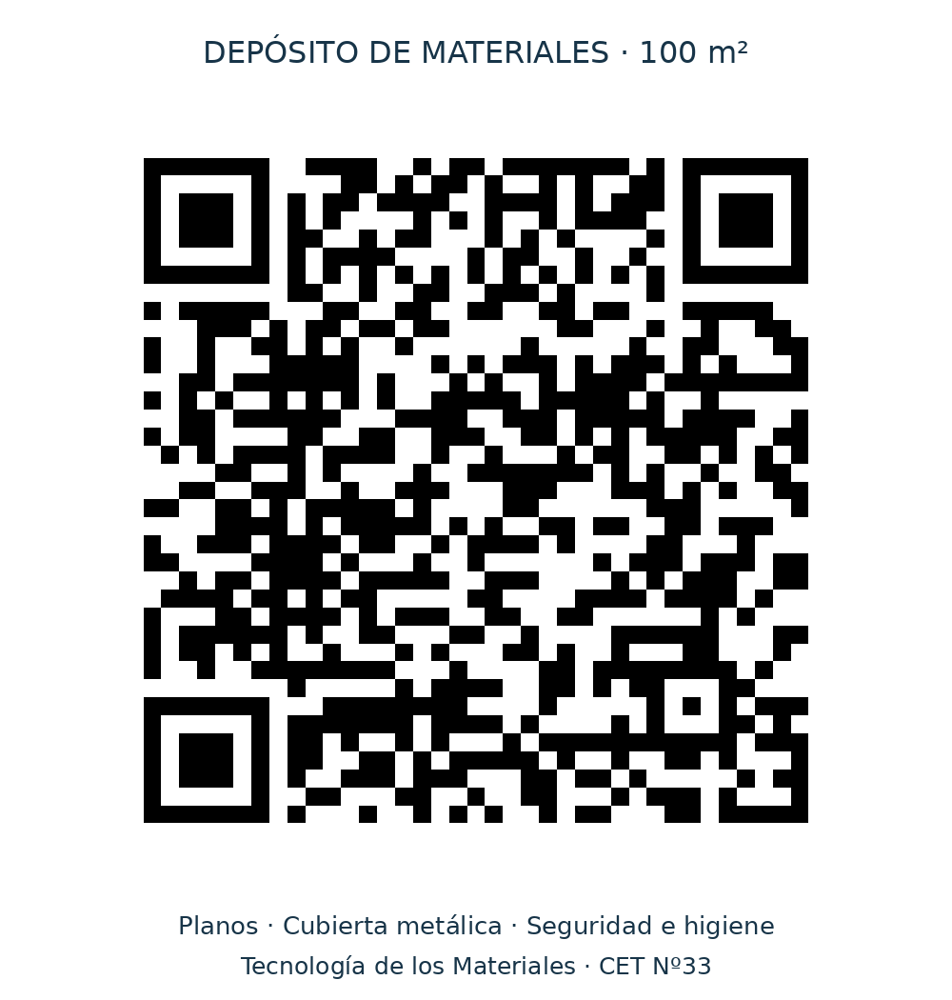

CONSTRUCCIÓN · PROYECTO DIDÁCTICO
Un depósito.
Materiales y seguridad.
Una propuesta de 10 × 10 m con cubierta metálica a dos aguas. Explorá su distribución, los sistemas constructivos y las decisiones de seguridad e higiene.
Anteproyecto didáctico. Las medidas son propuestas de diseño. Para construir se requieren cálculo estructural, verificación de seguridad e higiene y aprobación profesional y municipal.
Explorá las láminas.
Tocá una imagen para ampliarla y recorrer sus detalles. El visor del PDF permite cambiar de página, hacer zoom y usar pantalla completa.


Planta de techo y fachada
Abrir página 2 en PDF ↗

Cortes y materialidad
Abrir página 3 en PDF ↗

Seguridad e higiene
Abrir página 4 en PDF ↗SEGURIDAD E HIGIENE
La distribución también previene riesgos.
Circulación y salidas
Dos salidas peatonales, apertura exterior y recorrido libre propuesto de 1,20 m. El portón se considera por separado.
Almacenamiento
Bolsas sobre pallets secos, estibas estables, cargas pesadas abajo y perfiles con retenes. Movimiento con zorra manual.
Ambiente de trabajo
Ventilación alta enfrentada, control de condensación, iluminación y reserva de ubicación para equipos contra incendios.
Marco de referencia: Ley 19.587 y Decreto 351/79, según actividad; normativa provincial y municipal. Cantidad de equipos contra incendios, capacidades, ventilación y medios de escape requieren verificación específica. Consultar fuente oficial ↗
Para trabajar en clase
- Identificá los materiales de estructura, cerramientos, piso y cubierta.
- Justificá cinco decisiones del plano que reduzcan riesgos.
- Compará dos alternativas de cubierta y explicá cómo controlarías la condensación.
- Señalá qué datos faltan para verificar estibas, piso y protección contra incendios.
DEL PROYECTOR AL CELULAR
Acceso directo al proyecto.
Escaneá el QR para volver a esta página, consultar las láminas o descargar el PDF.
Descargar QR para imprimir
Tecnología de los Materiales · CET Nº33

PRODUCCIONES DE ESTUDIANTES
Trabajos de alumnos.
Individuales y grupales, con sus autores y el PDF para ampliar.
Cargando trabajos…